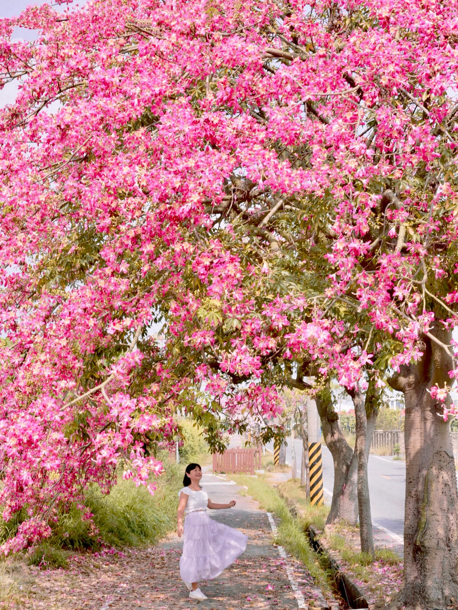

走進葡萄酒鄉，住進慢旅的一晚
- 台中高鐵出發
帶著團體一起出發，先認識二林。
- 葡萄園與酒莊
產業導覽；依年齡安排品飲或無酒精體驗。
- 饗二林莊園午餐
從地方餐桌認識二林滋味。
- 手打蕎麥麵・農會選物・季節景點
親手揉、擀、切，成品帶回家料理；再看當季農景。
- 九味庄晚餐與包棟民宿
一起共桌，晚間自由活動與休息。
 餓，林時起意！ERLIN SLOW TRAVEL
餓，林時起意！ERLIN SLOW TRAVEL動手做蕎麥麵、認識農村、嚐一口在地滋味。
不喝酒也能參與，四季都有不同的出遊理由。
團體提案展示｜日期、接待內容及售價須另行確認
先選團體類型，看看這趟二林旅行如何貼近你們的需求。
用蕎麥手作、農村體驗與地方共桌，安排自然的交流時光；以平日團體預約，洽詢適合公司的節奏與預算。
農景散步、地方餐食與農場體驗交錯安排，適合一起出遊、一起吃飯的大團體。不喝酒的人也有無酒精體驗方向。
從葡萄與蕎麥作物觀察、米食或農事體驗，到二林人文走讀，把食農、地方產業與歷史放進同一趟學習旅程。
以台中高鐵站集合、遊覽車移動為主；場域與順序依接待及季節調整。
帶著團體一起出發，先認識二林。
產業導覽；依年齡安排品飲或無酒精體驗。
從地方餐桌認識二林滋味。
親手揉、擀、切，成品帶回家料理；再看當季農景。
一起共桌，晚間自由活動與休息。
早餐自理，從日常飲食與街區認識小鎮。
焢窯餐食套裝含午餐，依預約安排。
看糖業記憶；五分車依當日營運與班次確認。
預計約17:00前後抵達，依當日路況調整。
春夏秋冬選一組農景，再串上製麵、葡萄手作、焢窯與鐵道，讓這趟旅行不只停留在照片裡。
同一條農遊主線，依出發季節搭配當季景點。點開春夏秋冬，看看這一季適合遇見什麼。
蕎麥麵納入基本行程；釀酒或葡萄汁可自由加購。

從和粉、揉麵到擀切，把二林蕎麥變成自己的手作成品。從田間作物到一碗麵，認識二林的食農故事。
成品以帶回家料理為主；操作內容依預約課程安排。照片為過往食農活動紀錄。

把葡萄的風味帶進手作：成年飲酒者可選釀造起始DIY；親子與不飲酒的旅客可選無酒精葡萄汁，依喜好自由參加。
釀酒後續發酵、裝瓶與配送依合作酒莊安排，另確認費用；未成年採無酒精活動。照片為葡萄園場景，非DIY操作紀錄。

從泥土與火候認識農村料理，一起等待開窯，把手作、分享與午餐放進同一段體驗。
焢窯餐食套裝已納入基本行程；食材、操作與開窯時間依團體預約安排。

搭乘五分車認識糖廠與鐵道文化。手作之後，留一段坐著看風景的時間，感受糖業留下的地方記憶。
以團體預約搭乘安排，依營運班次確認，並與焢窯活動時間銜接。
地方餐廳、市場早餐、農場午餐，讓用餐也是旅行的一部分。點開卡片看特色餐點。
在田園裡住一晚，把白天的農遊延續成晚間的相聚。理想大苑提供包棟空間；理想星苑採包層方式，設有電梯，適合家族、朋友與團體同行。
設備使用提醒｜卡拉OK免費使用，歡唱至22:00；電動麻將需押金NT$3,000，退房檢查無誤後匯退，押金不計入團費。戶外戲水池依季節與現場安排開放。
特色資料：業者提供資訊、觀光署理想大苑旅宿介紹 ↗
以20人團、兩天一夜安排估算，讓承辦人先有討論基礎；正式售價仍需依日期與需求詢價。
20人平日團規劃基礎，含東螺溪焢窯餐食套裝與五分車；自由加購另計，正式團費依預約確認。
以上皆為自由參加／自由加購，不含於基本費用；正式內容與價格依預約確認。
小計未含全程導遊／領隊、酒莊體驗、季節景點加購、停車、超時及業者另收項目；正式報價依日期、人數與活動方案確認。
可以依團體需求洽詢無酒精體驗，例如葡萄汁、果醬或食農活動。未成年不提供酒精品飲；品飲、採果及DIY項目須依場域方案確認。
四季景觀會受天候、播種與採收影響。出團前須由承辦單位確認花況、果園開放與室內替代活動，不保證每團都能採果或看到盛花。
請在詢價時先提供人數與需求。步行動線、一樓房、素食及過敏食材須由各場域逐一確認；目前不承諾全程無障礙。
已列小計包含交通、保險、台式蕎麥體驗、住宿、表列餐食、焢窯餐食套裝與五分車；酒莊體驗及另計項目須另詢。第二日市場早餐自理；季節伴手禮依需求另詢。保險內容及保額依正式方案確認。
學生與未成年以作物觀察、無酒精加工、蕎麥手作及農村食農為方向。可由帶隊老師先設定學習目標，再與場域確認適齡活動、帶隊配置及雨天安排。
團體需求單用於行程諮詢，並非線上報名或付款。正式日期、接待量、售價及取消條款，仍須由承辦人與合作業者確認。
留下團體概況與聯絡方式，讓我們了解你們想要的旅行。
沿著火紅花道，慢慢走進春天。

木棉花在枝頭盛放，橘紅花色與周圍綠色田野形成對比。適合觀察河岸地景、花朵與農村道路的關係。
順著花道緩步散策，先欣賞成排樹冠，再看落花與田野細節。建議預留約30–45分鐘，時間為本網站行程建議。
以花道的延伸方向構圖，把紅色樹冠與綠色田野一起帶入畫面。避開車道與農地，不為拍照擋住通行。

把夏天的紅寶石，從枝頭認識起。
把步調放慢，走一段粉紅色秋天。
秋季由儒林路美人樹接棒，粉色花朵連成花景，呈現二林不同於春季木棉的柔和風貌。
以花道散策搭配農村觀察，留意樹冠、落花與道路的縱深。建議停留約30–45分鐘，依花況調整。
保留原企劃中秋檔期的監獄蛋黃酥預購選物安排；需另確認當年度供貨、預訂與取貨方式。

不用遠行，也能遇見田野裡的白雪。

小巧白花密集盛開，遠望像為農田鋪上一層白雪。花田位置會隨年度耕作與播種安排變化。
把賞花接上手打蕎麥麵體驗，理解蕎麥如何從作物變成食物；活動開放與預約方式須向合作場域確認。
沿田埂外圍欣賞花海，觀察花形與農作地景。建議停留約30–45分鐘；不走進作物區、不踩踏花田。

把二林的土地與人情，端上餐桌。

庭園式餐廳結合團體聚餐與客製桌菜，適合里民活動、大型家族一起圍桌用餐。
官方桌菜方案可見饗林五拼盤、臘味米糕叉燒酥等料理；季節活動亦曾推出火龍果刈包。菜色依當季食材與預訂方案調整。
延續企劃以在地米、蕎麥與季節農產串聯地方餐桌的方向，實際入菜內容請於團體訂餐時向餐廳確認。
一桌熱菜，盛起二林的晚餐時光。

以台式料理與團體合菜，承接第一天的晚餐安排。大家圍桌共食，也把白天的農遊故事接著聊下去。
店家公開菜單曾列白斬鹽水鵝、三杯白鰻魚、醬燒白鰻魚及蒜片帶骨牛小排，可作為團體詢菜的參考。
依人數與預算洽詢桌菜，搭配魚、肉、蔬菜與主食。菜單會更新，實際供應及價格以店家確認為準。
從一碗熱食，走進小鎮的早晨。

早餐不只是一餐，也是一段觀察在地居民日常的散策。保留原企劃的市場早餐安排，依店家營業情形自由選擇或集中取餐。
二林市場周邊代表小吃之一。酥炸外皮搭配豬肉、筍丁與醬料，是這間老店的辨識度；可配清湯品嚐。
採小組步行分流，事先集合與點餐；若長輩不便久站，建議先協調取餐。圖片為肉圓壽實景，不代表所有市場店家的早餐。

把米食的香氣，從手作帶到餐桌。